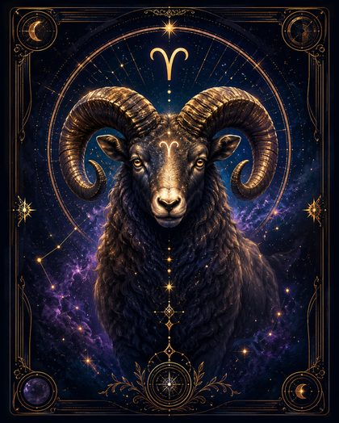
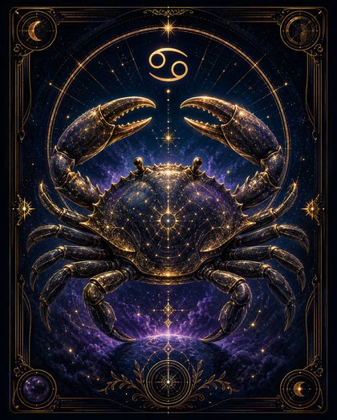
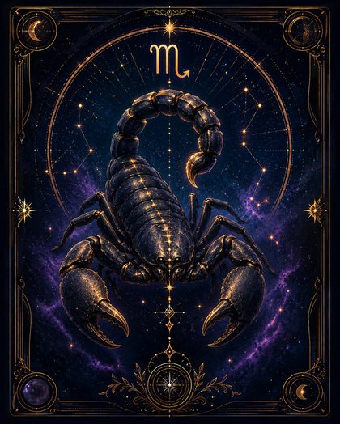
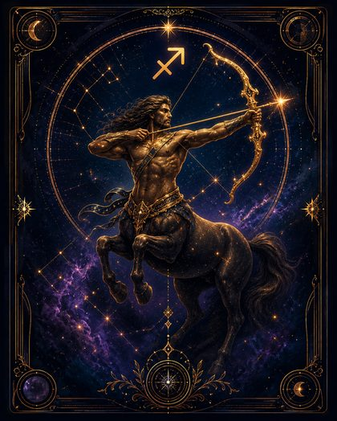
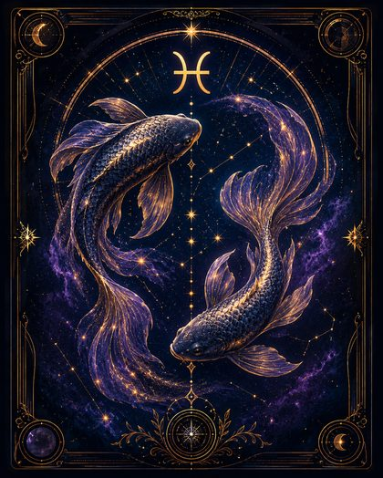

Каждый знак — это обобщённый портрет по положению Солнца в момент рождения. Ниже — 12 карточек: нажми на знак, чтобы прочитать про него.
Колесо Зодиака — интерактивная система знаков и старших арканов →
♈
Овен
Импульс, смелость, начало

♉
Телец
Стабильность, опора, форма
♊
Близнецы
Контакт, движение, информация
♋
Рак
Чувства, дом, внутренняя глубина

♌
Лев
Самовыражение, сила, достоинство
♍
Дева
Порядок, точность, практичность
♎
Весы
Баланс, партнёрство, гармония
♏
Скорпион
Глубина, сила, трансформация

♐
Стрелец
Смысл, путь, расширение горизонтов

♑
Козерог
Структура, цель, достижение
♒
Водолей
Свобода, идеи, будущее
♓
Рыбы
Интуиция, сострадание, тайна

Это обобщённое описание солнечного знака, а не полный портрет человека. В реальной натальной карте характер зависит не только от Солнца, но и от других факторов.